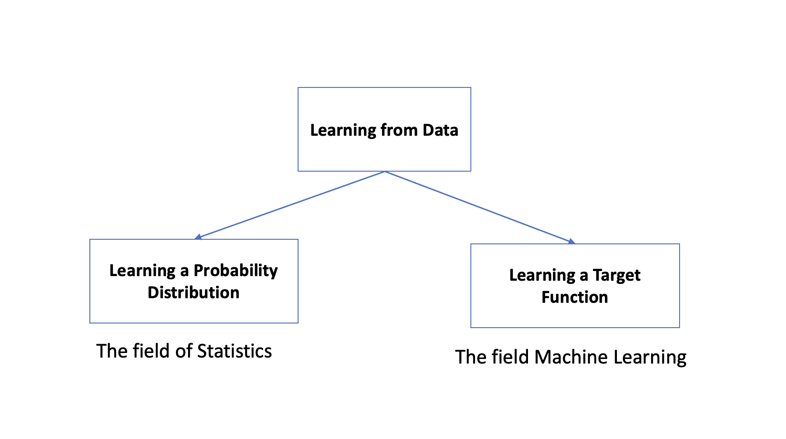

Learning Problem#
Learning from Data#
learning from Data can be seen as learning a function or a probability distribution.
From a probabilistic point of view it is our goal to learn a joint probability distribution \(P\) that explains our data. With the knowledge of \(P\) it would be possible to predict based on observations made:
On the other side the problem could be seen as a numeric optimization problem. Then we are searching for a function \(f:X \to Y\) with \(f(x) = y\) that explains the data.

Both the probability distribution P and the function f are unknown. But there is a chance to learn \(P\) or \(f\) based on data.
We will use both views in the rest of the lecture, but with strong focus on the numeric optimization.
Mathematical Formulation#
When we look at machine learning, our goal is to learn a pattern from data. The pattern explains our data. Data means that we have a collection of data points. Each data point consists of independent and dependent variables. We call them features and labels. Sometimes called input and output.
Let X and Y be vector spaces. A data point \((x,y)\) is an element of the product space \(X \times Y\).
Let \(\theta \in R^n\) be a parameter. We are looking for a hypothesis that explains the data well. Our hypothesis is a parameterized function, that maps a feature vector from feature space \(X\) onto a label vector in \(Y\).
The set of all hypothesis build the hypothesis space. We call that space our model. Finding a good model implies domain knowledge.
Our goal is to learn \(\theta\) so, that for all data points \((x,y)\) the hypothesis \(h_{\theta}(x) = \hat{y} \thickapprox y\) fits well.
Learning is the process of finding a good hypothesis inside the hypothesis space.
To be able to evaluate our learning success we need a loss function \(𝐿(𝑦,ℎ_{𝜃}(𝑥))\) that measures the error for each data point.
Lets have a look at some typical loss functions:
import matplotlib.pyplot as plt
import numpy as np
X = np.linspace(0,2*np.pi,100)
y = np.sin(X)
y_pred = np.copy(y)
y_pred[::5] += 3 * (0.5 - np.random.rand(20))
fig, ax = plt.subplots()
ax.plot(X,y)
ax.scatter(X,y_pred, s=20, c="red")
plt.show()
def zero_one_loss(y, y_pred):
return np.where(y == y_pred,0,1)
def l1_loss(y, y_pred):
return np.abs(y - y_pred)
def l2_loss(y,y_pred):
return np.square(y-y_pred)
print(zero_one_loss(y, y_pred).sum())
print(l1_loss(y, y_pred).sum())
print(l2_loss(y, y_pred).sum())
print(zero_one_loss(y, y_pred).mean())
print(l1_loss(y, y_pred).mean())
print(l2_loss(y, y_pred).mean())
20
20.60002389712873
23.074040415642784
0.2
0.20600023897128728
0.23074040415642785
Now we have the tree basic ingredients of machine learning: data, model, loss
Empirical Risk Minimization#
Assume we know the joint probability distribution \(P(X,Y)\) on \((X,Y)\). With this in mind the hypothesis \(h\) could be seen as a random variable on \(X \rightarrow Y\), and also the loss function \(𝐿(y,h)\) is a random variable. Now we can compute the statistical risk as the expected value of the loss:
In reality we do not know P.
But if we have enough data points, we can approximate the statistical risk with the empirical risk acording to the law of large numbers:
This leads to a minimization problem:
If \(L\) is differentiable we can use gradient descent to find a local minimum.